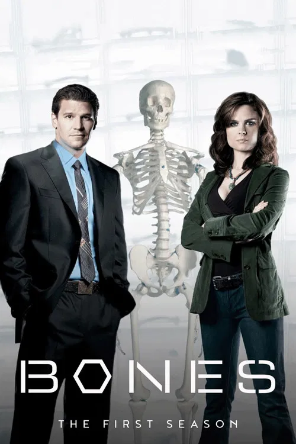
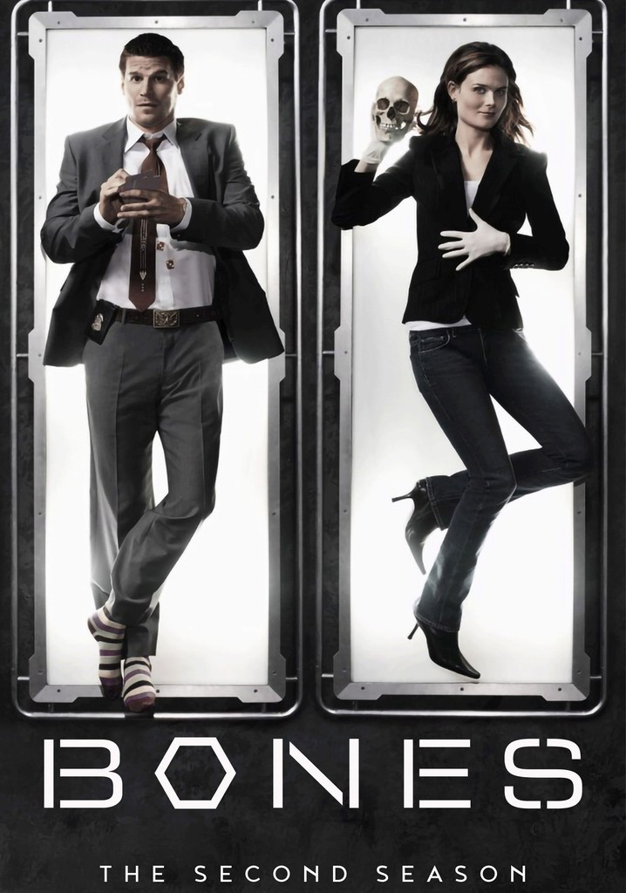
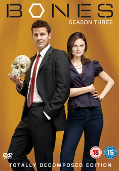

Stagione 1 (2005-2006)
La prima stagione di Bones pone le fondamenta dell'intero universo narrativo della serie, introducendo il metodo scientifico di Temperance Brennan e il suo incontro con l'approccio più intuitivo e pragmatico dell'agente Seeley Booth. I casi, pur mantenendo una struttura prevalentemente autoconclusiva, servono a delineare progressivamente i personaggi e le loro relazioni, costruendo un equilibrio iniziale tra procedurale classico e sviluppo emotivo. È una stagione di definizione e sperimentazione, in cui si stabiliscono il tono, il ritmo e i temi che accompagneranno la serie nelle stagioni successive.
L'antropologa forense Temperance Brennan soprannominata "Bones" viene tallonata dall'agente dell'FBI Seeley Booth che le chiede di aiutarlo a risolvere l'omicidio su un caso in cui la vittima è irriconoscibile. Si scopre che la vittima era l'ex stagista di un senatore. Le pressioni politiche e il fatto che Bones sia affidata alla tutela dell'Agente Booth butta scompiglio sia a livello personale fra i due, sia a livello di accuse. A seguito di attente analisi, il sospetto cade sull'ex fidanzato della stagista, nonché attuale segretario del senatore. L'assassino che tenta di bruciare la sua cantina per cercare di eliminare le prove a suo carico. Bones lo ferma in tempo sparandogli un colpo di pistola alla gamba.
Bones e Booth vengono chiamati a indagare sull'esplosione dell'auto di un diplomatico mediorientale. I due devono scoprire se l'uomo era un terrorista o se è rimasto vittima di un omicidio. Le indagini degli investigatori partono dai familiari della vittima: il fratello e la ex moglie. I tecnici di laboratorio scoprono che entrambi i fratelli soffrivano di eruzioni cutanee al volto e iniziano a fare delle ipotesi sul tipo di sostanza con la quale i due sono entrati in contatto. Scoperto un laboratorio per la costruzione di rudimentali bombe alla diossina nell'appartamento del fratello della vittima, quest'ultimo diventa il principale sospettato e viene fermato all'interno di un centro commerciale con un colpo di pistola sparato da Booth, giusto un attimo prima che faccia detonare un altro ordigno.
Bones e Booth devono districarsi in una fitta di rete di frodi e ricatti a sfondo sessuale in una scuola privata, dopo avere ritrovato il corpo di un ragazzo impiccato a un albero nel giardino della medesima. Bones e Booth si ritrovano a subire le pressioni del preside che intende salvare la reputazione della scuola, fiore all'occhiello in fatto di sicurezza, a cui sono iscritti i figli di importanti figure della politica americana. Il preside quindi tende a escludere l'omicidio per favorire la tesi del suicidio, tesi che, se confermata dalle indagini, escluderebbe ogni responsabilità della scuola. Il fiuto di Booth porterà però la scoperta di un filmato a sfondo sessuale autoprodotto che smaschererà due degli ex compagni della vittima come esecutori del delitto, che avevano il fine di chiedere soldi per la non diffusione del video.

Stagione 2 (2006-2007)
La seconda stagione di Bones consolida l'identità della serie, ampliando il respiro narrativo e approfondendo le dinamiche interne al team del Jeffersonian. I casi diventano progressivamente più complessi, sia sul piano scientifico sia su quello umano, mentre il rapporto tra Brennan e Booth si arricchisce di sfumature emotive e conflitti ideologici. L'equilibrio tra rigore forense e coinvolgimento personale viene messo costantemente alla prova, segnando un passaggio decisivo dalla fase introduttiva a una narrazione più matura e stratificata.
Bones e Booth si precipitano sul luogo di un deragliamento ferroviario, in cui ha perso la vita un senatore; sembra che un noto cestista si sia suicidato lanciandosi con l'auto sopra i binari. Sul posto è già arrivato il nuovo capo del Jeffersonian, Camille Saroyan, che stenta ad avere un rapporto costruttivo con i membri del laboratorio. Le indagini portano però al riconoscimento del cadavere ritrovato nell'auto, che è stato manipolato per assomigliare al noto giocatore di basket; il corpo appartiene invece ad un tossicodipendente. Resta quindi l'interrogativo di dove sia effettivamente l'uomo, che ha inscenato la sua morte. Grazie all'aiuto di sua moglie, si scopre che l'atleta era anche un grosso investitore di borsa che collaborava con un investigatore privato. Da qui partono alcune ricerche e grazie ad uno stratagemma, Booth otterrà una confessione: l'investigatore e l'atleta avevano collaborato per inscenare la scomparsa di quest'ultimo, sperando di ottenere forti somme di denaro dovute alla speculazione dei titoli in borsa; ma la morte del senatore nel deragliamento del treno, ha portato l'investigatore a disfarsi del suo socio temendo di essere scoperto, gettandolo dall'auto. Ora resterà paralizzato per tutta la vita su un letto d'ospedale, mentre per l'ex investigatore si aprono le porte del carcere.
Nella baia del Delaware viene ritrovato il cadavere di una donna incinta scomparsa l'anno prima; ancora una volta le indagini vengono focalizzate sull'ex marito della vittima, ripetuto fedifrago e scagionato per mancanza di prove all'origine del fatto. Solo Bones sembra determinata a non puntare il dito contro l'uomo. Ma la scomparsa di quest'ultimo avvicina la curiosità di Booth alla nuova compagna dell'uomo, che, prima indicando di averlo conosciuto solo dopo la scomparsa della moglie, si scopre però averlo avvicinato già diverso tempo prima. Si teme un coinvolgimento della donna nell'omicidio della prima moglie quindi, ma le analisi dello staff e della dottoressa Saroyan, il cui rapporto con Bones stenta a decollare, sui resti della donna e del feto ritrovati, fanno giungere a ben altre conclusioni. Il feto ritrovato infatti è il corpicino di un neonato già nato e poi morto; grazie all'analisi del DNA e alla ricostruzione olografica di Angela, si può risalire alla vera madre: si tratta di un'amica della defunta, che in preda ad una crisi dovuta alla depressione, ha ucciso involontariamente il proprio figlio appena nato. Grazie alle sue abilità di veterinaria poi, ha avvicinato l'amica e, dopo averla uccisa, le ha prelevato il bambino ormai pronto a venir alla luce, scambiandolo con il proprio. Nel frattempo il padre biologico è stato ritrovato e, dopo aver ammesso di essere scappato solo per timore del giudizio di tutti quanti, ha potuto riabbracciare il proprio figlio ed essere scagionato da ogni accusa.
Il ribaltamento di un camion della nettezza urbana consente di ritrovare il cadavere decomposto di un adolescente che era scomparso qualche tempo prima. Questi è avvolto in un lenzuolo e tiene tra le mani una rosa. Angela riesce a ricostruire i tratti del volto, permettendo il riconoscimento nel database nazionale. Assieme al ragazzo è scomparsa anche una sua coetanea e conoscente che diventa la principale sospettata. Le indagini si spostano sulla famiglia della ragazza che viveva in affidamento. Quando quest'ultima viene ritrovata, tenta di addossarsi la colpa dell'omicidio, ma le prove sulla scena del delitto non collimano con la versione data dalla sospettata. Il detective scopre che la ragazza stava tentando di proteggere il fratello addossandosi la colpa; il ragazzino, per paura di restare solo senza la sorella, ha provocato la morte dell'adolescente spingendolo da una finestra dopo averlo colpito a quindici metri di altezza. La sensibilità di Bones verso il caso, anche lei proviene da una famiglia che l'ha adottata, la porta a comunicare con il nuovo capo stabilendo un punto d'incontro che le porterà a collaborare in futuro.

Stagione 3 (2007-2008)
Con la terza stagione, Bones compie un salto qualitativo evidente, spingendo la serie verso territori narrativi più oscuri e psicologicamente intensi. Le indagini si intrecciano sempre più con le vite private dei protagonisti, mentre antagonisti ricorrenti e scelte morali complesse contribuiscono a innalzare la tensione drammatica. È una stagione di svolta, in cui il procedural classico lascia spazio a una riflessione più profonda sulle conseguenze emotive del lavoro forense e sul prezzo personale che esso comporta.
Un teschio viene lanciato da un cavalcavia e si schianta sul parabrezza di un'auto: Booth convince Bones a tornare a investigare sul campo con lui, visto che da tre mesi rimaneva chiusa in laboratorio per coprire i turni di Zack, partito per l'Iraq, che lei non riesce a sostituire. Cam e Bones scoprono che sul teschio ci sono tracce di denti, il che significa che l'assassino è un cannibale. Intanto Jack e Angela assumono un investigatore privato per scoprire chi è il marito di Angela, così che lei possa divorziare e sposarsi con Jack. A sorpresa di tutti Zack torna improvvisamente dall'Iraq, giusto in tempo per fornire una prova cruciale per la risoluzione del caso. Grazie alle teorie di Jack si scopre che il cannibale fa parte di un gruppo segreto fondato anni prima per combattere società segrete come la Massoneria e la Carboneria; la squadra però arriva solo all'assistente del cannibale.
Una donna di nome June salta in aria con il suo furgoncino e Bones e Booth vengono chiamati ad indagare: si scopre che la donna, apparentemente buona moglie e madre di famiglia, era in realtà una ricercata dell'FBI perché faceva parte di un gruppo estremista degli anni settanta e che il suo vero nome era Amy Nash. Le prove indicano che era intenzionata a costituirsi ma qualcuno voleva evitare che lo facesse. Intanto Bones va a trovare suo padre.
Dopo la scoperta in una foresta di un corpo decomposto con i piedi amputati e le braccia legate, il team è chiamato a svolgere le indagini sull'omicidio. Si scopre che l'uomo si recava in un ritrovo per feticisti con fantasie erotiche riguardanti i cavalli ed era stato ucciso con un coltello per la pulizia degli zoccoli. Sua moglie l'aveva scoperto con un'altra donna, la sua cavallerizza, appena prima che lui morisse ed entrambe diventano sospettate di omicidio, così come l'ex-marito dell'amante e un macellaio anch'egli frequentatore del ritrovo. Nel frattempo Angela tenta di ricordare, attraverso l'ipnosi, il nome di suo marito, di cui ricorda solo il soprannome Birambau. Angela deve ritrovarlo per divorziare e potersi finalmente sposare con Hodgins. Sebbene la seduta ipnotica non funzioni, alla fine Angela riesce a ricordare il nome: Grayson Barasa.